Chapter 11 The Central Role of the Propensity Score in Observational Studies for Causal Effects
Rosenbaum and Rubin, 1983b () proposed the key concept propensity score and discussed its role in causal inference with observational studies. It is one of the most cited papers in statistics, and Titterington, (2013) listed it as the second most cited paper published in Biometrika during the past 100 years. Its number of citations has grown very fast in recent years.
Under the IID sampling assumption, we have four random variables associated with each unit:  . Following the basic probability rules, we can factorize the joint distribution as
. Following the basic probability rules, we can factorize the joint distribution as
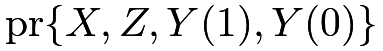 |
||||
 |
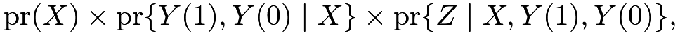 |
where
- 1.
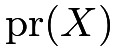
is the covariate distribution, - 2.
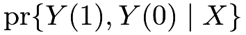
is the outcome distribution conditional on the covariates ,
,
- 3.
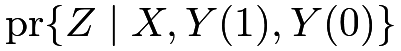
is the treatment distribution conditional on the covariates, also known as the treatment assignment mechanism.
Usually, we do not want to model the covariates because they are background information happening before the treatment and outcome. If we want to go beyond the outcome model, then we must focus on the treatment assignment mechanism, which leads to the definition of the propensity score.
Definition 11.1 (propensity score)
Define
 |
as the propensity score. Under strong ignorability, we have
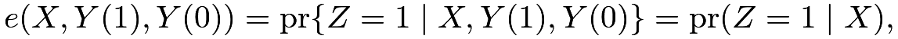 |
so the propensity score reduces to
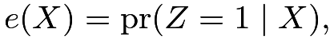 |
the conditional probability of receiving the treatment given the observed covariates.
Rosenbaum and Rubin, 1983b () used  as the definition of the propensity score because they focused on observational studies under strong ignorability. It is sometimes helpful to view
as the definition of the propensity score because they focused on observational studies under strong ignorability. It is sometimes helpful to view
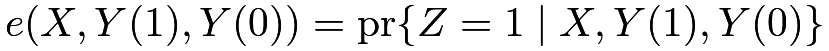
as the general definition of the propensity score even when strong ignorability fails. See Problem 11.1 for more details.Following Rosenbaum and Rubin, 1983b (), this chapter will demonstrate that  is a key quantity in causal inference with observational studies under ignorability.
is a key quantity in causal inference with observational studies under ignorability.
58 The propensity score as a dimension reduction tool
58.1 Theory
Theorem 11.1
If  , then
, then

Theorem 11.1 states that if strong ignorability holds conditional on covariates , then it also holds conditional on the scalar propensity score .
The ignorability requires conditioning on many background characteristics of the units, but Theorem 11.1 implies that conditioning on the propensity score removes all confounding induced by covariates  The original covariates can be general and have many dimensions, but the propensity score is a one-dimensional scalar variable bounded between
The original covariates can be general and have many dimensions, but the propensity score is a one-dimensional scalar variable bounded between  and
and  . Therefore, the propensity score reduces the dimension of the original covariates but still maintains the ignorability. As a statistical terminology, we can view the propensity score as a dimensional reduction tool. We will first prove Theorem 11.1 below and then give an application of the dimension reduction property of the propensity score.
. Therefore, the propensity score reduces the dimension of the original covariates but still maintains the ignorability. As a statistical terminology, we can view the propensity score as a dimensional reduction tool. We will first prove Theorem 11.1 below and then give an application of the dimension reduction property of the propensity score.
Proof of Theorem 11.1: By the definition of conditional independence, we need to show that
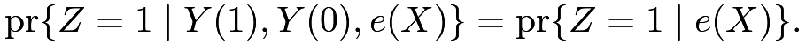 |
(57) |
The left-hand side of (57) equals
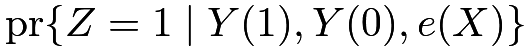 |
||||
|
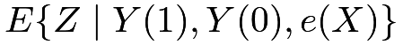 |
|||
|
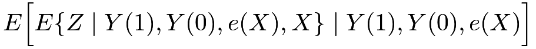 |
|||
| (tower property; see Section 30.A.5) | ||||
|
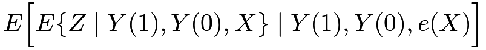 |
|||
|
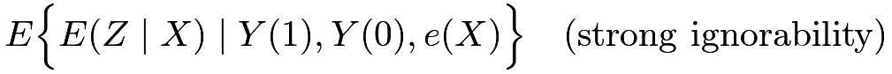 |
|||
|
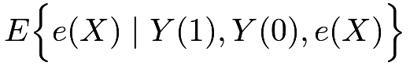 |
|||
|
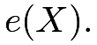 |
The right-hand side of (57) equals
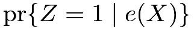 |
||||
|
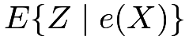 |
|||
|
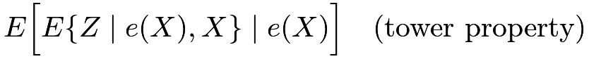 |
|||
|
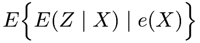 |
|||
|
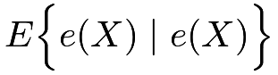 |
|||
|
So the left-hand side of (57) equals the right-hand side of (57).

58.2 Propensity score stratification
Theorem 11.1 motivates a simple method for estimating causal effects: propensity score stratification.
Starting from the simple case, we assume that the propensity score is known and only takes  possible values
possible values
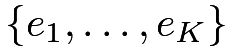
with being much smaller than the sample size  . Theorem 11.1 reduces to
. Theorem 11.1 reduces to
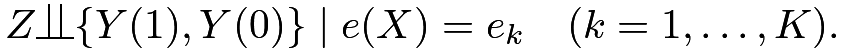 |
Therefore, we have an SRE, that is, we have independent CREs within strata of the propensity score. We can analyze the observational data in the same way as the SRE stratified on .
In general, the propensity score is not known and is not discrete. We often fit a statistical model for
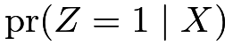
(for example, a logistic model of the binary given ) to obtain the estimated propensity score
given ) to obtain the estimated propensity score 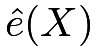
. This estimated propensity score can take as many values as the sample size, but we can discretize it to approximate the simple case above. For example, we can discretize the estimated propensity score by its quantiles to obtain 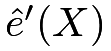
: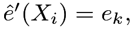
the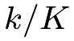
-th quantile of , if is between the
is between the 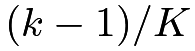
-th and -th quantiles of the’s. Then
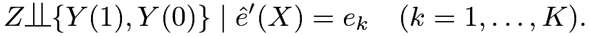 |
holds approximately. So we can analyze the observational data in the same way as the SRE stratified on . The ignorability holds only approximately given . We can further use regression adjustment based on covariates to remove bias and improve efficiency. To be more specific, we can obtain Lin, (2013)’s estimator within each stratum and construct the final estimator by a weighted average (see Chapter 30.4).
With an unknown propensity score, we need to fit a statistical model to obtain the estimated propensity score . This makes the final estimator dependent on the model specification. However, the propensity score stratification estimator only requires the correct ordering of the estimated propensity scores rather than their exact values, which makes it relatively robust compared with other methods. This robustness property of propensity score stratification appeared in many numerical examples but its rigorous quantification is still missing in the literature.
An important practical question is how to choose ? If is too small, then ignorability does not hold conditional on even approximately. If is too large, then we do not have enough units within each stratum of the estimated propensity score and many strata have only treated or control units. Therefore, we face a trade-off. Following Cochran, (1968)’s heuristics, Rosenbaum and Rubin, 1983b () and Rosenbaum and Rubin, (1984) suggested  which removes a large amount of bias in many settings. However, with extremely large datasets, propensity score stratification leads to biased estimators with a fixed (Lunceford and Davidian,, 2004). It is thus reasonable to increase as long as each stratum still has enough treated and control units. Wang et al., (2020) suggested a greedy choice of , which is the maximum number of strata such that the stratified estimator is well-defined. However, the rigorous theory for this procedure is not fully established.
which removes a large amount of bias in many settings. However, with extremely large datasets, propensity score stratification leads to biased estimators with a fixed (Lunceford and Davidian,, 2004). It is thus reasonable to increase as long as each stratum still has enough treated and control units. Wang et al., (2020) suggested a greedy choice of , which is the maximum number of strata such that the stratified estimator is well-defined. However, the rigorous theory for this procedure is not fully established.
Another important practical question is how to compute the standard errors of the estimators based on propensity score stratification. Some researchers have conditioned on the discretized propensity scores and reported standard errors based on the SRE. This effectively ignores the uncertainty in the estimated propensity scores. This often leads to an overestimation of the true variance since a surprising result in the literature is that using the estimated propensity scores decreases the asymptotic variance for estimating the average causal effect (Su et al.,, 2023). Other researchers bootstrapped the whole procedure to account for full uncertainty. However, the theory for the bootstrap is still unclear due to the discreteness of this estimator.
58.3 Application
To illustrate the propensity score stratification method, I revisited Example 10.3.
Example 10.3 introduced the covariates in the dataset. The treatment School_meal is the indicator for participation in the school meal plan, and the outcome BMI is the BMI.
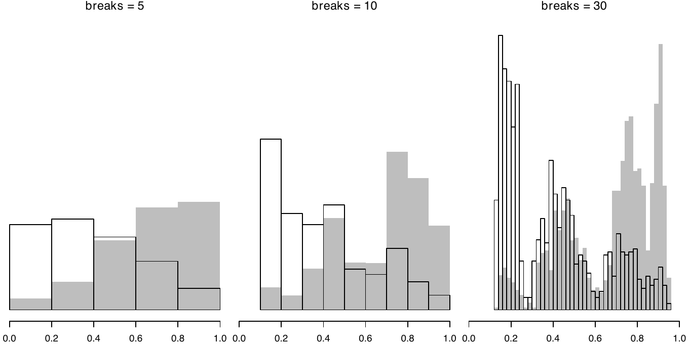
Figure 18 shows the histograms of the estimated propensity scores with different numbers of bins
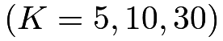
. Based on propensity score stratification, we can calculate the point estimators and the standard errors for difference choice of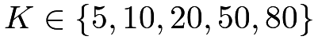
as follows (with the function Neyman_SRE defined in Chapter 5 for analyzing the SRE):Increasing from  to
to
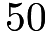
reduces the standard error. However, we cannot go as extreme as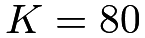
because the standard error is not well-defined in some strata with only one treated or one control unit. The above estimators show a negative but insignificant effect of the meal program on BMI.We can also compare the above estimator with the three simple regression estimators: the one without adjusting for any covariates, and Fisher’s and Lin’s estimators.
The naive difference in means differs greatly from the other methods due to the large imbalance in covariates. Fisher’s estimator still gives a positive point estimate although it is not significant. Lin’s estimator and the propensity score stratification estimators give qualitatively the same results. The propensity score stratification estimators are stable across different choices of .
59 Propensity score weighting
59.1 Theory
Theorem 11.2
If 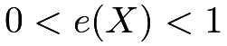 and
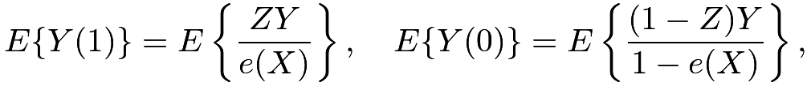 |
and
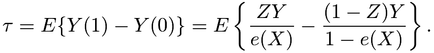 |
Before proving Theorem 11.2, it is important to note the additional assumption . It is called the overlap or positivity condition. The formulas in Theorem 11.2 become infinity if  or for some values of . It is not a requirement only for the identification formulas based on propensity score weighting. Although it was not stated explicitly in Theorem 10.1, the conditional expectations
or for some values of . It is not a requirement only for the identification formulas based on propensity score weighting. Although it was not stated explicitly in Theorem 10.1, the conditional expectations
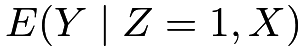
and in the identification formula of
in the identification formula of  in (51) is well defined only if . The overlap condition can be viewed as a technical condition to ensure that the formulas in Theorems 10.1 and 11.2 are well defined. It can also cause some philosophical issues for causal inference with observational studies. When unit
in (51) is well defined only if . The overlap condition can be viewed as a technical condition to ensure that the formulas in Theorems 10.1 and 11.2 are well defined. It can also cause some philosophical issues for causal inference with observational studies. When unit  has
has 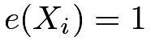
, we always observe its potential outcome under the treatment, , but can never observe its potential outcome under the control,
, but can never observe its potential outcome under the control,  . In this case, the potential outcome may not even be well defined, making the definition of the causal effect ambiguous for unit . King and Zeng, (2006) called an extreme counterfactual when , and discussed their dangers in causal inference. A similar problem arises if unit has
. In this case, the potential outcome may not even be well defined, making the definition of the causal effect ambiguous for unit . King and Zeng, (2006) called an extreme counterfactual when , and discussed their dangers in causal inference. A similar problem arises if unit has 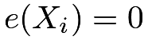
.In sum, requires adequate covariates to ensure the conditional independence of the treatment and potential outcomes, and requires residual randomness in the treatment conditional on the covariates. In fact, Rosenbaum and Rubin, 1983b ()’s definition of strong ignorability includes both of these conditions. In modern literature, they are often stated separately.
Proof of Theorem 11.2:
I only prove the result for  because the proof of the result for
because the proof of the result for  is similar. We have
is similar. We have
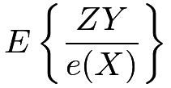 |
||||
|
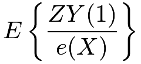 |
|||
|
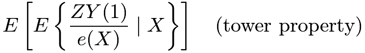 |
|||
|
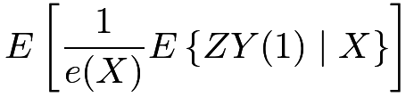 |
|||
|
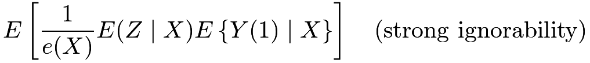 |
|||
|
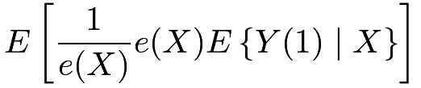 |
|||
|
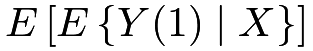 |
|||
|
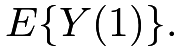 |
59.2 Inverse propensity score weighting estimators
Theorem 11.2 motivates the following moment estimator for the average causal effect:
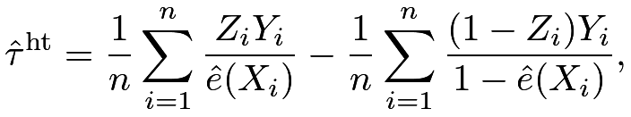 |
where is the estimated propensity score. This is the inverse propensity score weighting (IPW) estimator, which is also called the Horvitz–Thompson (HT) estimator. Horvitz and Thompson, (1952) proposed it in survey sampling and Rosenbaum, 1987a () used in causal inference with observational studies.
However, the estimator has many problems. In particular, it is not invariant to the location transformation of the outcome. Proposition 11.1 states this problem precisely, with the proof relegated to Problem 11.3.
Proposition 11.1 (lack of invariance for the HT estimator)
If we change  to with a constant
to with a constant  , then the HT estimator becomes , where
, then the HT estimator becomes , where
can be viewed as two different estimates of the constant .
In Proposition 11.1, I use the funny notation and because with the true propensity score these two terms both have expectation 1; see Problem 11.3 for more details. In general, is not zero in finite samples. Since adding a constant to every outcome should not change the average causal effect, the HT estimator is not reasonable because of its dependence on A simple fix to the problem is to normalize the weights by and respectively, resulting in the following estimator
This is the Hajek estimator due to Hájek, (1971) in the context of survey sampling with varying probabilities. We can verify that the Hajek estimator is invariant to the location transformation. That is, if we replace by , then  remains the same; see Problem 11.3. Moreover, many numerical studies have found that is much more stable than in finite samples.
remains the same; see Problem 11.3. Moreover, many numerical studies have found that is much more stable than in finite samples.
59.3 A problem of IPW and a fundamental problem of causal inference
Many asymptotic analyses require a strong overlap condition
that is, the true propensity score is bounded away from and . However, D’Amour et al., (2021) pointed out that this is a rather strong assumption, especially with many covariates. Chapter 20 will discuss this problem in detail.
Even if the strong overlap condition holds for the true propensity score, the estimated propensity scores can be close to or .
When this happens, the weighting estimators blow up to infinity, which results in extremely unstable behavior in finite samples. We can either truncate the estimated propensity score by changing it to
or trim the observations by dropping units with outside the interval . Crump et al., (2009) suggested and , and Kurth et al., (2005) suggested and . Yang and Ding, 2018b () established some asymptotic theory for trimming. Overall, although trimming often stabilizes the IPW estimators, it also injects additional arbitrariness into the procedure.
59.4 Application
The following functions can compute the IPW estimators and their bootstrap standard errors.
Revisiting Example 10.3, we can obtain the IPW estimators based on different truncations of the estimated propensity scores. The following results are the two weighting estimators with the bootstrap standard errors, with truncations at  , , , and :
, , , and :
The HT estimator gives results far away from all other estimators we discussed so far. The point estimates seem too large and they are negatively significant unless we truncate the estimated propensity scores at . This is an example showing the instability of the HT estimator.
60 The balancing property of the propensity score
60.1 Theory
Theorem 11.3
The propensity score satisfies
Moreover, for any function , we have
| (58) |
provided the existence of the moments on both sides of (58).
Theorem 11.3 does not require the ignorability assumption. It is about the treatment and covariates only.
The first part of Theorem 11.3 states that conditional on the propensity score, the treatment indicator, and the covariates are independent. Therefore, within the same level of the propensity score, the covariate distributions are balanced across the treatment and control groups.
The second part of Theorem 11.3 states that an equivalent form of covariate balance based on the weighting form.
I give a proof of Theorem 11.3 below.
Proof of Theorem 11.3: First, we show , that is,
| (59) |
Following similar steps as the proof of Theorem 11.1, we can show that the left-hand side of (59) equals
and the right-hand side of (59) equals
|
||||
|
||||
|
||||
|
||||
|
Therefore, (59) holds.
Second, we show (58). We can use similar steps as the proof of Theorem 11.2. But given Theorem 11.2, we have a simpler proof. If we view  as an outcome, then its two potential outcomes are identical and ignorability holds: . The difference between the left-hand and right-hand sides of (58) is the average causal effect of on , which is zero.
as an outcome, then its two potential outcomes are identical and ignorability holds: . The difference between the left-hand and right-hand sides of (58) is the average causal effect of on , which is zero.
60.2 Covariate balance check
The proof of Theorem 11.3 is simple. But Theorem 11.3 has useful implications for the statistical analysis. Before getting access to the outcome data, we can check whether the propensity score model is specified well enough to ensure the covariate balance in the data. Rubin, (2007) viewed this as the design stage of the observational study, and Rubin, (2008) argued that this can result in more objective causal inference because the design stage does not involve the values of the outcomes.31
In the propensity score stratification, we have the discretized estimated propensity score and approximately
Therefore, we can check whether the covariate distributions are the same across the treatment and control groups within each stratum of the discretized estimated propensity score.
In propensity score weighting, we can view as a pseudo outcome and estimate the average causal effect on . Because the true average causal effect on is , the estimate should not be significantly different from . A canonical choice of is .
Let us revisit Example 10.3 again. Based on propensity score stratification with , all the covariates are well-balanced across the treatment and control groups. Similar results hold for the Hajek estimator. The only exception is Food_Stamp, the 7th covariate in Figure 19.
Figure 19 shows the balance-checking results.
61 Homework Problems
11.1 Another version of Theorem 11.1
Prove that
| (60) |
Remark: This result holds without assuming strong ignorability. It implies that
Rosenbaum, (2020) and Rosenbaum and Rubin, (2023) pointed out the result in (60) and called the principal unobserved covariate.
11.2 Another version of Theorem 11.1
Theorem 11.1 states a result under strong ignorability. An analogous result also holds under ignorability.
That is, if ignorability holds conditional on covariates , then it also holds conditional on the scalar propensity score .
Theorem 11.4
If  for
for  , then
for .
, then
for .
Prove Theorem 11.4.
11.3 More results on the IPW estimators
11.4 Re-analysis of Rosenbaum and Rubin, 1983a ()
Table 5 is from Rosenbaum and Rubin, 1983a (), which concerned the causal effect of the coronary artery bypass surgery compared with the medical therapy on the functional improvement 6 months after cardiac catheterization. They first estimated the propensity score based on 74 observed covariates and then formed 5 strata based on the discretized estimated propensity score. Because the treatment is binary and the outcome is also binary, they represented the data in a table. Based on Table 5 , estimate the average causal effect, and report the 95% confidence interval of the average causal effect.
| stratum by | treatment | number of patients | proportion improved |
|---|---|---|---|
| 1 | Surgical | 26 | 0.54 |
| Medical | 277 | 0.35 | |
| 2 | Surgical | 68 | 0.70 |
| Medical | 235 | 0.40 | |
| 3 | Surgical | 98 | 0.70 |
| Medical | 205 | 0.35 | |
| 4 | Surgical | 164 | 0.71 |
| Medical | 139 | 0.30 | |
| 5 | Surgical | 234 | 0.70 |
| Medical | 69 | 0.39 |
Remark: If you are interested, you can read the whole paper of Rosenbaum and Rubin, 1983a () after reading Part IV of the book. It is a canonical paper on sensitivity analysis in causal inference.
11.5 Balancing score and propensity score: more theoretical results
Rosenbaum and Rubin, 1983b () also introduced the notion of balancing score.
Definition 11.2 (balancing score)
is a balancing score if
In Definition 11.2, can be a scalar or a vector. An obvious balancing score is , but it is not a useful one without any simplification of the original covariates. By Theorem 11.3, the propensity score is a special balancing score. More interestingly, Rosenbaum and Rubin, 1983b () showed that the propensity score is the coarsest balancing score, as in Theorem 11.5 below which includes Theorem 11.3 as a special case.
Theorem 11.5
is a balancing score if and only if is finer than in the sense that for some function .
Theorem 11.5 is relevant in subgroup analysis. In particular, we may be interested in not only the average causal effect but also the subgroup effects. For instance, we may want to estimate the average causal effects among boys and girls, respectively. Without loss of generality, assume the first component of is the indicator for girls, and we are interested in estimating
Theorem 11.5 implies that under ignorability, we also have
| (61) |
because is finer than and thus a balancing score. The conditional independence in (61) ensures ignorability holds given the propensity score, within each level of  . Therefore, we can perform the same analysis based on the propensity score, within each level of , yielding estimates for two subgroup effects.
. Therefore, we can perform the same analysis based on the propensity score, within each level of , yielding estimates for two subgroup effects.
With the above motivation in mind, now prove Theorem 11.5.
11.6 Some basics of subgroup effects
This problem is related to Problem 11.5, but you can work on it independently.
Consider a standard observational study with covariates , where denotes a binary subgroup indicator (e.g., statistics major or not statistics major) and  contains the rest of the covariates. The parameter of interest is the subgroup causal effect
contains the rest of the covariates. The parameter of interest is the subgroup causal effect
Show that
and give the corresponding HT and Hajek estimators for .
11.7 Recommended reading
The title of this chapter is the same as the title of the classic paper by Rosenbaum and Rubin, 1983b (). Most results in this chapter are directly drawn from their original paper.
Rubin, (2007) and Rubin, (2008) highlighted the importance of the design stage of observational studies for more objective causal inference
脚注
31. While this is a useful recommendation in practice, it is not entirely clear how to quantify the objectiveness.